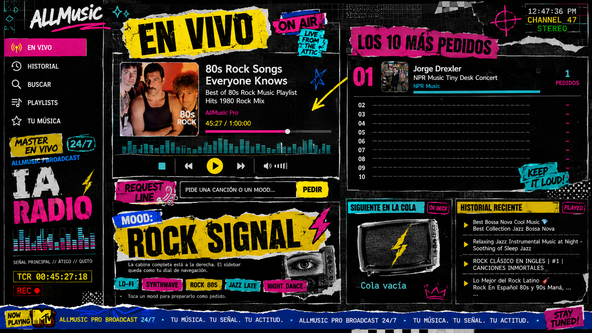
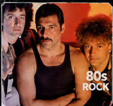

80s Rock Songs Everyone Knows
Best of 80s Rock Music Playlist
AllMusic Pro
45:27/1:00:00
Los 10 más pedidos
- Todavía no hay pedidos registrados.
Mood de la señal
ROCK SIGNALLa cabina está lista para recibir el próximo pedido.
Siguiente en la cola
- La cola está vacía.
Historial reciente
- Todavía no hay historial.
Cargando…
La transmisión está lista.